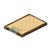
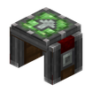
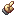

安山合金：整个 Create 的地基材料
参数
类型基础合金
配方2 安山岩 + 2 铁粒
用途机壳 / 齿轮 / 传动件
详细教程
怎么获得
最朴素的做法是工作台：两块安山岩 + 两颗铁粒，按对角交叉摆（安山岩放左上和右下，铁粒放右上和左下），一次出 1 个安山合金。注意用的是铁粒不是铁锭 —— 一颗铁锭分解成 9 粒，等于 1 个合金只花 1/9 个铁锭。
安山岩在地下层大量生成，用镐挖一背包就够铺满一条产线。规模上去以后，把安山岩和铁粒分别用漏斗送进动力合成器，比手搓快得多；合金本身也能压成合金块储存，9 个压 1 块、拆开还是 9 个。
怎么用
它是 Create 里一切「安山系」零件的前体：安山机壳、齿轮、大齿轮、传动轴、安山漏斗、安山隧道、安山脚手架、安山栏杆……几乎每台入门机器的外壳都要先有它。所以开局第一件事不是造机器，而是先攒一组合金。
合金本身不直接放在世界里用，它是中间材料。压成安山合金块后可以当建材，颜色比铁块暗、比石头暖，做工厂地坪和机器底座很搭；也可以再切回 9 个合金，属于纯储存手段。
常见坑
最常见的错误是拿铁锭去合成，摆上去毫无反应 —— 配方要的是铁粒。第二个坑是摆错位置：四格必须是斜对角交叉，摆成两行或两列都不成立。
还有一个隐性成本：手搓一次只出 1 个，而一台带传动的基础机器往往要 8 到 16 个合金。别等到造机器时才发现合金不够，前期挖安山岩时顺手多挖两背包。
获取方式
被谁使用
被 73 个物品的 76 条配方用作材料。
工作台 66 个

剪贴板×1
矿车装配站×2
黄铜手部零件×1